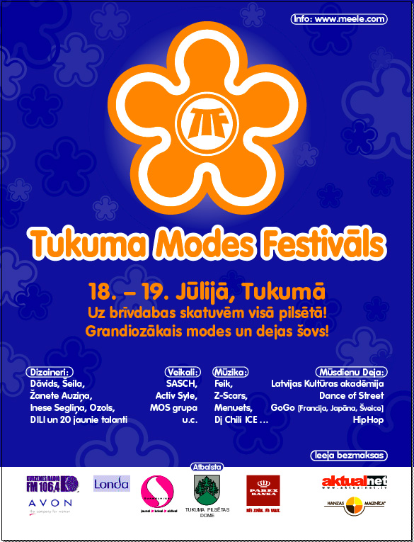

2003. gadā vasaras karstākajās jūlija dienās Latvijas Modes meistari Tukumā ienesa svaigu elpu, ļaujot ikvienam ieskatīties gan tērpa tapšanas aizkulisēs, gan modeļu nospriegotajā dzīves ritmā, gan šarma un prožektoru izgaismotajā mēles pasaulē.
Tukuma Modes festivāls nu jau ir kļuvis par tradīciju Latvijas modes dzīvē, kā arī par sava veida ceļu, kā modei izrauties no Rīgas, iegūt jaunus apveidus mazpilsētas gaisā un priecēt visus. Mode iziet ielās un šoreiz nevis pārspīlēti, bet gan tieši - divu dienu laikā 18. un 19. jūlijā, Tukums BIJA modei un mode bija Tukumam, ikviena pilsētas iela soļoja defilē, ikviens ģērba labāko un modernāko, lai turētos modes straujam ritmam līdzi, ikviens …. .
Cik daudz spēj izmainīt divas dienas cilvēka dzīvē tikpat daudz cilvēka dzīve spēj ietekmēt modi! Skatīsimies nākamgad, kas jauns un augsim līdzi! Uz tikšanos nākamajā modes vasarā, III Tukuma Modes festivālā, kas solās būt vēl grandiozāks un pat ar starptautisku piegaršu!